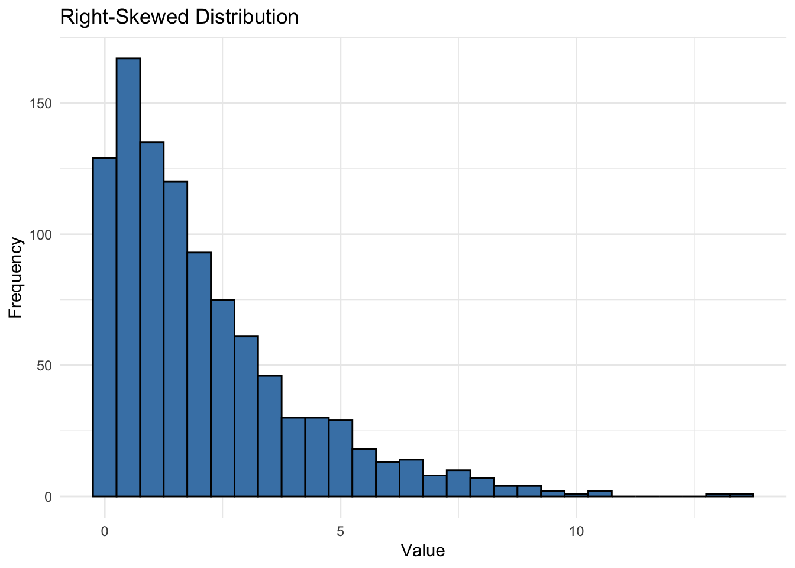

# A tibble: 100 × 4
age spending product_interest region
<dbl> <dbl> <chr> <chr>
1 33 495 Fashion East
2 18 458 Fashion North
3 32 491 Health South
4 30 420 Fashion South
5 85 664 Fashion East
6 35 533 Fashion East
7 31 526 Health South
8 14 350 Fashion South
9 24 471 Health East
10 NA 424 Fashion South
# ℹ 90 more rows16 Univariate EDA
Univariate Exploratory Data Analysis (EDA) focuses on examining one variable at a time. By understanding each variable individually, we gain valuable insights that lay the groundwork for analyzing relationships and building predictive models. In the context of entrepreneurship, a thorough exploration of each variable provides clarity on customer demographics, financial projections, or product feedback, which is essential for making informed business decisions.
16.1 Demonstration Data: UrbanFind
Consider UrbanFind, a startup that specializes in curating personalized recommendations for city dwellers in several areas of their lives:
Tech Gadgets: Recommendations for the latest gadgets and devices that enhance convenience and connectivity in a fast-paced city life, such as smart home devices, wearable tech, and productivity tools.
Fashion: Curated fashion items and accessories that align with urban styles and seasonal trends, helping city dwellers look their best in a competitive, image-conscious environment.
Outdoor Activities: Gear and suggestions for outdoor activities that are accessible even in or near urban settings—like urban hiking, weekend getaways, and fitness equipment for both outdoor and indoor use.
Health and Wellness Products: Products focused on personal well-being, including fitness equipment, nutritional supplements, and relaxation tools to counterbalance the stresses of urban life.
These recommendations aim to provide city residents with tailored options that fit their lifestyle and preferences, whether they’re looking to upgrade their tech, update their wardrobe, stay active, or improve their wellness. By analyzing customer data, UrbanFind can better understand which areas resonate most with their audience and refine their product offerings and marketing strategies accordingly.
By examining single variables—like customer age, income level, or product rating—UrbanFind can answer foundational questions: Who is the customer? What budget range can they afford? How satisfied are they with existing products? These insights, while simple, guide strategic decisions and set the stage for deeper analysis.
16.2 Why Univariate Analysis Matters
In analytics, understanding one variable at a time helps us:
- Validate Data Quality: Spot issues like outliers or missing values.
- Identify Patterns: Observe distributions (e.g., age distribution) that inform customer targeting.
- Guide Future Analysis: Set a foundation for examining relationships between variables and building models that predict customer behavior or business performance.
This chapter will cover key univariate concepts, such as descriptive statistics, distribution shapes, and outlier detection. We’ll use examples that relate directly to entrepreneurial questions, preparing you to leverage these techniques in real-world contexts.
In the next sections, we’ll dive deeper into specific univariate techniques, using the UrbanFind data to illustrate these foundational skills.
Key Learning Objectives
- Understand what univariate analysis is and why it’s important in business analytics.
- Use univariate techniques to describe and interpret single-variable data.
- Apply R tools for basic descriptive statistics and visualizations.
In the next sections, we’ll dive deeper into specific univariate techniques.
16.3 Variables and Data Distributions
In data analysis, two core concepts provide the foundation for all other work: variables and distributions. These concepts allow us to understand and interpret data by examining the values it takes on and the way those values are spread across a dataset.
16.3.1 What is a Variable?
A variable s a characteristic or quantity that can take on different values. Variables are the building blocks of data analysis, capturing information that helps us describe and understand patterns in our data. Variables might represent something categorical (like product type or region) or numerical (like age or spending).
16.3.1.1 Variables in UrbanFind’s Data
UrbanFind conducted a survey to gather insights into customer demographics, spending habits, and interests. The dataset we’re working with contains responses from 100 survey participants who are representative of UrbanFind’s potential customer base. Each row is an observation, representing the responses of one unique respondent, with the following variables captured:
Age: The age of the customer in years. Age is an important demographic factor for UrbanFind, as different age groups may have distinct preferences for technology, fashion, or outdoor activities.
Spending: The amount (in dollars) each customer reported spending on lifestyle-related products in the past month. This includes items like tech gadgets, health products, and outdoor gear. UrbanFind aims to understand the range of spending to help design product bundles and set price points.
Product Interest: The product category the customer is most interested in, chosen from four options: Tech, Fashion, Outdoors, and Health. This helps UrbanFind determine which product lines to prioritize for marketing and inventory.
Region: The geographic region where each customer lives, categorized into North, South, East, and West. This variable provides insights into potential regional differences in product preferences and spending behaviors.
Each of these variables gives us a unique lens through which to view the customer base. By examining them individually, we gain insights that will inform how UrbanFind can tailor its offerings to meet customer needs.
16.3.1.2 Viewing the UrbanFind Dataset
Here’s a preview of the customer_data dataset. Notice how the values of each variable vary across observations. In other words, age, spending, product_interest, and region are all variables that provide different types of information.
Examining each variable on its own helps us understand data quality, spot trends, and set up analyses that explore relationships between variables. In the next section, we’ll dive into data distributions, where we’ll see how these values are spread across different levels or categories.
16.3.2 What is a Data Distribution?
When we collect data for a variable, the values usually don’t look the same. Instead, they spread out across a range, forming a distribution. A distribution tells us how values of a variable are arranged, showing us which values are common, which are rare, and whether values tend to cluster or spread widely. The distribution of a variable reveals the “shape” of the data. Different distributions tell us different things about a dataset, and understanding this shape helps us interpret data accurately and make informed decisions.
Why Distributions Matter In entrepreneurship analytics, understanding the distribution of data can reveal patterns critical to decision-making. For example, a distribution might show us if most customers are clustered within a specific age range, if spending varies widely across customer segments, or if there are peaks indicating strong customer preferences for certain products.
16.3.2.1 Example Distributions
While there are hundreds of known probability distributions, each with a different shape, there are a few shapes that are more commonly observed and used:
- Normal Distribution: A bell-shaped, symmetric distribution where most values cluster around the center. Many naturally occurring variables (like heights or test scores) tend to have a normal distribution.
This plot shows individual data points of a random variable (x) that follow a pattern defined by a standard normal distribution (N(0,1)). The values of the random variable (x) are spread along the x-axis, with the density curve illustrating the theoretical distribution shape that describes where values are most likely to occur; the height of the curve reflects the relative likelihood of values in different regions, with peaks indicating where data points cluster.
Skewed Distributions: These distributions lean to one side.
- In a right-skewed (positively skewed) distribution, values are pulled toward higher numbers.
- In a left-skewed (negatively skewed) distribution, values are pulled toward lower numbers.
This plot displays individual data points for two random variables: Variable A (in blue) and Variable B (in red). Variable A exhibits a right skew, with values clustering toward the lower range and a longer tail extending to the right. In contrast, Variable B is left skewed, with values concentrated toward the higher range and a tail extending to the left. The smooth density curves represent the distributions of each variable in their respective colors..
- Bimodal Distribution: This distribution has two peaks or clusters of values, which might occur if there are two main groups within a dataset. For instance, if UrbanFind’s customers showed two main age groups interested in tech and fashion, the data might display a bimodal distribution.
This plot shows individual data points for a random variable with a bimodal distribution, where values cluster around two distinct peaks. The smooth density curve highlights these two main groups within the data, reflecting areas of higher concentration on either side. The two peaks suggest the presence of two underlying subgroups or patterns within the data.
16.3.3 Working with a Grade Distribution
When we talk about a “grading curve,” we’re referring to a process of normalizing scores from any distribution to align more closely with a normal distribution (bell-shaped curve). In a class where scores are naturally left-skewed (most students performed below average), applying a curve can raise scores, moving the class average higher and “helping” those below the mean. However, if scores are right-skewed (most students scored high), curving might shift grades downward, making a higher score necessary for an A grade. The idea is to standardize performance so that the distribution reflects the relative achievement of the class, rather than an absolute scale.
Just as with any distribution, whether the curve benefits or lowers your score depends on the original shape of the data—in this case, the pattern of class scores. Curving aims to provide a fair comparison among students by normalizing grades based on the overall class distribution, regardless of whether the scores are clustered, skewed, or even bimodal.
16.3.4 Visualizing a Distribution
Now that we’ve explored the shapes of various distributions, let’s try plotting them to see how the distributions of different variables may look.
One way to see a distribution is with a histogram, which shows the frequency of different value ranges within a variable. Histograms are useful for visualizing the shape of the data—whether it clusters in the middle, leans to one side, or has multiple peaks. Understanding this shape provides valuable insights for interpreting data trends and making decisions based on the data.
16.3.5 Demonstration: Visualizing a Normal Distribution
Let’s start by creating a histogram of a variable that follows a normal distribution. The dataset includes 1000 observations of the normally-distributed variable called normal_data. A portion is shown here:
# A tibble: 1,000 × 1
value
<dbl>
1 1.37
2 -0.565
3 0.363
4 0.633
5 0.404
6 -0.106
7 1.51
8 -0.0947
9 2.02
10 -0.0627
# ℹ 990 more rowsNow, use the ggplot2 package to plot a histogram of normal_data.
# Visualizing the example data distribution
library(ggplot2)
ggplot(normal_data, aes(x = value)) +
geom_histogram(binwidth = 0.1, fill = "steelblue", color = "black") +
labs(title = "Example of a Normal Distribution", x = "Value", y = "Frequency") +
theme_minimal()Reflection: Observe how the values cluster around the mean (0) and taper off symmetrically in both directions. This characteristic bell shape is a hallmark of the normal distribution.
16.3.6 Exercise: Visualizing Skewed and Bimodal Distributions
16.3.6.1 Try it yourself:
Data for a right-skewed variable is found in skewed_data and data for a bimodal variable is found in bimodal_data. Visualizing the distributions of these variables using histograms. Compare the shapes to what you would expect from each distribution type.
16.3.7 Hint 1
Build your histogram plot using the grammar of graphics by declaring the data, specifying the aesthetic mapping (a histogram maps a variable to the x-axis only), and calling the geometry (a histogram uses the geom_histogram() function). Note that you can specify the binwidth (the span of the x-axis covered by one bar of the histogram), fill (the color of the bars of the histogram), and color (the color of the borders of the bars).
16.3.8 Hint 2
For the skewed distribution:
- Call the
ggplot()function - Specify the data as
skewed_data - Specify the geometry as
geom_histogram - [optional] Specify
binwidth,fill, andcoloras you like
- Call the
For the bimodal distribution:
- Call the
ggplot()function - Specify the data as
bimodal_data - Specify the geometry as
geom_histogram - [optional] Specify
binwidth,fill, andcoloras you like
- Call the
geom_histogram(binwidth = 1) 16.4 Fully worked solution:
For the skewed distribution:
- Call the
ggplot()function - Specify the data as
skewed_data - Specify the geometry as
geom_histogram - [optional] Specify
binwidth,fill, andcoloras you like
- Call the
For the bimodal distribution:
- Call the
ggplot()function - Specify the data as
bimodal_data - Specify the geometry as
geom_histogram - [optional] Specify
binwidth,fill, andcoloras you like
- Call the
1ggplot(skewed_data,
2 aes(x = variable)) +
3 geom_histogram()
ggplot(bimodal_data,
aes(x = variable)) +
geom_histogram()- 1
-
Call the
ggplot()function and specifyskewed_dataorbimodal_dataas the data - 2
-
Specify that aesthetic mapping with
variableplotted on the x-axis - 3
-
Call the
geom_histogram()function to get a histogram of the distributions [optional] then specify thebinwidth,fill,color, or other aesthetics ofgeom_histogram()
16.5 Descriptive Statistics
Descriptive statistics are essential tools for summarizing the main features of a dataset. They help us understand the central tendencies (typical values) and variability (spread) of data, which can provide valuable insights into what’s “usual” or “expected” in a given context.
16.6 Key Measures of Central Tendency
Mean: The mean, or average, is calculated by summing all values and dividing by the number of observations. It’s useful for understanding the overall level but can be influenced by extreme values (outliers).
- Example: If a customer base has a few extremely high spenders, the mean might be higher than what most customers spend on average.
Median: The median is the middle value when data is sorted in ascending order. It provides a better measure of central tendency in skewed data because it is less affected by outliers.
- Example: The median income in a dataset might be a more representative measure than the mean if there are a few very high-income earners skewing the data.
Mode (optional): The mode is the most frequent value of the variable, useful primarily for categorical data. Calculating the mode in R requires a custom function, which you’ll learn how to build later. For now, think of the mode as the “most popular” value in a dataset, like the most frequently purchased product category.
- Example: In a dataset on customer product preferences, the mode could reveal the most popular product category.
Note: In quantitative analysis, mean and median are more commonly used measures of central tendency, especially for numerical data.
16.6.1 Entrepreneurial Insight
Central tendency measures help answer questions such as, “What is the typical customer profile?” or “Are there any standout age groups among customers?” Knowing these tendencies supports tailored marketing, pricing, and product development.
16.6.2 Variation and Spread
Range: The range is the difference between the highest and lowest values. While easy to understand, it’s sensitive to outliers and doesn’t show how data is distributed within the range.
Standard Deviation (SD): SD measures the average distance of each observation from the mean. A high SD suggests wide variability, while a low SD indicates consistency.
- Example: In a customer spending dataset, a high SD might indicate that some customers spend much more than others.
Variance: Variance is the square of the standard deviation. It’s often used in statistical models, although it’s less intuitive than SD itself.
- Example: If customer age variance is high, it suggests diverse age groups within the customer base, which could indicate the need for targeted marketing.
16.6.3 Variability and Decision-making in Real Life
When we talk about variability, we’re trying to understand how much individual values differ from the average. Measures like standard deviation and variance help us grasp this concept by quantifying the spread around the mean. While the mean alone gives us a central value, understanding variability allows us to make smarter predictions and decisions based on how widely data points deviate from that average.
One practical example is a daily commute. Imagine you and a friend predict the commute time each day. Most days might be close to an average time of 20 minutes, but occasionally, traffic or accidents cause delays. Here’s how variability plays into this:
Standard Deviation and Planning: On a regular day, aiming for the mean commute time of 20 minutes might work fine. But if you need to get to school or work for an important event, like an exam or job interview, relying on the mean alone is risky. To reduce the chance of being late, you might plan for the upper range, or average time plus some buffer, effectively acknowledging that your commute has a certain standard deviation.
Risk and Cost: When the cost of being late increases (e.g., missing a test), knowing that commute times vary allows you to make decisions that minimize the chance of being late, even if it means investing extra time in a longer commute. This approach aligns with standard deviation as a measure of risk, where a higher standard deviation would indicate a more unpredictable commute and therefore a greater need to plan for delays.
In this way, variability isn’t just an abstract statistic; it directly impacts decisions and planning in real life. Just as we consider the variability of commute times, understanding the standard deviation and variance of a dataset can help us make informed choices in various fields, such as business and finance, where the cost of deviation from the mean can be substantial.
16.6.4 Entrepreneurial Insight
Understanding the spread of data can reveal opportunities for segmentation. For example, if customer spending shows high variability, different marketing strategies might be needed for high versus low spenders.
16.6.5 Demonstration: Calculating Descriptive Statistics
The sales_data dataset represents a set of sales records for a fictional company named MetroMart, which operates across multiple regions. This dataset was created to demonstrate descriptive statistics and data exploration techniques, essential for understanding product performance and sales trends.
16.6.5.1 Dataset Overview
- Product ID: A unique identifier for each product (from 1 to 300).
- Price: The selling price of each product, normally distributed with a mean price of $20 and some variation to represent typical pricing diversity.
- Quantity Sold: The number of units sold, following a Poisson distribution to reflect typical purchase quantities.
- Region: The region where each product was sold, categorized into North, South, East, and West regions.
This dataset helps illustrate key statistical concepts such as central tendency and variability, providing insights into average prices, sales volume, and regional sales differences. These metrics can reveal data patterns, outliers, and trends that are crucial for strategic decision-making in areas like pricing, inventory, and targeted marketing.
16.6.5.2 Calculate Measures of Central Tendency
Let’s calculate the mean, median, and mode of the price and quantity_sold variables to understand the typical values for these sales metrics. We’ll start with R’s summary() function, which provides a quick overview of central tendency and spread.
summary(sales_data) product_id price quantity_sold region
Min. : 1.00 Min. : 5.88 Min. :17.00 Length:300
1st Qu.: 75.75 1st Qu.:16.77 1st Qu.:26.00 Class :character
Median :150.50 Median :19.79 Median :30.00 Mode :character
Mean :150.50 Mean :19.87 Mean :30.46
3rd Qu.:225.25 3rd Qu.:22.96 3rd Qu.:34.00
Max. :300.00 Max. :30.94 Max. :49.00 From the summary, we see that the mean price is $19.87 and the median price is $19.79. Since the mean and median are close in value, we can infer that the price variable is approximately symmetrically distributed, with minimal skew. This symmetry suggests that the distribution is balanced around the average price.
To understand whether most products fall near this average, however, we would look at measures of spread, such as variance or standard deviation. A smaller variance would indicate that most product prices are indeed close to the mean, while a larger variance would suggest a wider range of product prices.
For the quantity_sold variable, these statistics help us understand typical sales volume and whether any products sell far more or less than average. Identifying such patterns can guide decisions about inventory levels, promotions, and product assortment across different regions.
The summary shows thathe mean quantity sold is 30.46, and the median quantity sold is 30.
Interpretation
When the mean and median are similar, as seen here, it suggests a balanced, symmetrical distribution. However, to determine how closely values cluster around the average, we would examine the variance or standard deviation.
16.6.6 Calculate Measures of Spread
While measures of central tendency (like mean and median) give us an idea of typical values, measures of spread reveal how much the data varies around those central values. Understanding the spread is essential for interpreting data patterns, as it tells us whether values are tightly clustered around the mean or widely dispersed.
Here, we’ll explore three key measures of spread: range, standard deviation, and variance. Each provides a unique perspective on data variability.
16.6.6.1 Range
The simplest measure of spread, calculated as the difference between the maximum and minimum values. The range gives a quick sense of the data’s full span but is sensitive to outliers.
range(sales_data$price)[1] 5.88 30.94range(sales_data$quantity_sold)[1] 17 49In sales_data, the range of price is from $5.88 to $30.94, while the range of quantity_sold spans from 17 to 49. These ranges show the full spectrum of prices and quantities but don’t tell us how common values are within this span.
16.6.6.2 Interquartile Range (IQR)
The interquartile range (IQR) measures the spread of the middle 50% of data and is less affected by outliers than the range. It’s calculated as the difference between the first quartile (Q1) and the third quartile (Q3):
- First Quartile (Q1): The 25th percentile, where 25% of values fall below this point.
- Third Quartile (Q3): The 75th percentile, where 75% of values fall below this point.
The IQR is calculated as:
\[ \mathsf{IQR = Q_3 - Q_1} \] The IQR is especially useful in box plots, where it represents the range of the central box. It helps us understand the concentration of values around the median without the influence of extreme values (outliers).
quantile(sales_data$price, na.rm = TRUE) 0% 25% 50% 75% 100%
5.8800 16.7675 19.7900 22.9600 30.9400 IQR(sales_data$price, na.rm = TRUE)[1] 6.1925quantile(sales_data$quantity_sold, na.rm = TRUE) 0% 25% 50% 75% 100%
17 26 30 34 49 IQR(sales_data$quantity_sold, na.rm = TRUE)[1] 8The IQR of price is $6.19, meaning the middle 50% of prices fall within this range. For quantity_sold, the IQR is 8.
16.6.6.3 Standard Deviation (SD)
SD measures the average distance of each value from the mean. A low SD indicates that values are clustered near the mean, while a high SD suggests more variability. Standard deviation is useful for interpreting consistency in data.
sd(sales_data$price, na.rm = TRUE)[1] 4.678132sd(sales_data$quantity_sold, na.rm = TRUE)[1] 5.701199The standard deviation for product price is 4.6781317, and for quantity sold, it’s 5.7011988. These values show how much individual prices and sales quantities typically vary from their respective means.
16.6.6.4 Variance
Variance is the square of the standard deviation and represents the average squared deviation from the mean. While less interpretable than standard deviation, variance is widely used in statistical modeling and analysis.
var(sales_data$price)[1] 21.88492var(sales_data$quantity_sold)[1] 32.50367The variance for product price is 21.8849164, and for quantity_sold, it’s 32.5036678. Larger variance values indicate greater dispersion in the data.
Interpretation: Measures of spread are crucial for understanding data variability. For example, a low standard deviation in product prices could imply consistent pricing across products, while a higher standard deviation in quantity sold might indicate diverse customer buying patterns. Understanding variability helps MetroMart plan for inventory, adjust pricing strategies, and prepare for fluctuations in sales.
16.6.7 Exercise: Calculating Descriptive Statistics
16.6.7.1 Try it yourself:
Calculate the measures of central tendency (mean and median) and spread (range, IQR, standard deviation, and variance) for the age and spending variables in UrbanFind’s customer_data.
16.6.8 Hint 1
- Calculate descriptive statistics for mean and median using the
summary()function.
- Calculate descriptive statistics for spread (range, IQR, standard deviation, and variance) using the appropriate R functions.
16.6.9 Hint 2
For descriptive statistics about central tendencies:
- Call the
summary()function - Specify the data as
customer_data
- Call the
For descriptive statistics about spread:
- Call the
range()function forcustomer_dataand theageandspendingvariables – be sure to removeNAvalues from the calculation - Call the
IQR()function forcustomer_dataand theageandspendingvariables – be sure to removeNAvalues from the calculation - Call the
sd()function forcustomer_dataand theageandspendingvariables – be sure to removeNAvalues from the calculation - Call the
var()function forcustomer_dataand theageandspendingvariables – be sure to removeNAvalues from the calculation
- Call the
summary()
range()
IQR()
sd()
var() 16.7 Fully worked solution:
1summary(customer_data)
2range(customer_data$age, na.rm = TRUE)
range(customer_data$spending, na.rm = TRUE)
3IQR(customer_data$age, na.rm = TRUE)
IQR(customer_data$spending, na.rm = TRUE)
4sd(customer_data$age, na.rm = TRUE)
sd(customer_data$spending, na.rm = TRUE)
5var(customer_data$age, na.rm = TRUE)
var(customer_data$spending, na.rm = TRUE)- 1
-
Call the
summary()function forcustomer_data - 2
-
Call the
range()function forcustomer_dataand theageandspendingvariables removingNAvalues from the calculation - 3
-
Call the
IQR()function forcustomer_dataand theageandspendingvariables removingNAvalues from the calculation - 4
-
Call the
sd()function forcustomer_dataand theageandspendingvariables removingNAvalues from the calculation - 5
-
Call the
var()function forcustomer_dataand theageandspendingvariables removingNAvalues from the calculation
- Compare mean and median to see if the data may be skewed.
- What does the spread of the data suggest about the diversity of customer ages? spending?
16.8 Distribution Shapes and Visualization
Understanding the shape of a data distribution is essential in EDA, as it reveals important characteristics about the data. In this section, we’ll explore two key visualization tools—histograms and box plots—and discuss distribution shapes, including skewness and kurtosis.
16.8.1 Histograms and Box Plots
Histograms and box plots are two common ways to visualize the shape of a distribution, each with unique strengths:
16.8.1.1 Histogram
A histogram shows the frequency of values within specified ranges (bins) along the x-axis. It’s ideal for understanding the overall shape, identifying peaks, and detecting skewness.
16.8.1.2 Box Plot
A box plot displays the data’s quartiles and highlights potential outliers. The box represents the interquartile range (IQR), while the whiskers extend to the minimum and maximum values within 1.5 times the IQR. Outliers appear as individual points beyond the whiskers.
16.8.2 Skewness
Skewness indicates the asymmetry of a distribution:
- Positive Skew (Right Skew): When the right tail of the distribution is longer, most values cluster on the lower end. Examples include income and property prices, where a few high values increase the mean but don’t affect the median as much.

- Negative Skew (Left Skew): When the left tail is longer, values cluster on the higher end. For example, age at retirement or employee tenure can often show left skew, where most people retire at later ages with only a few retiring early.
Skewness affects the interpretation of central tendency, as a highly skewed distribution means that the mean may not be a good representative of “typical” values. In such cases, the median can provide a better sense of central tendency.
16.8.3 Kurtosis
Kurtosis measures the “tailedness” or the presence of extreme values in a distribution:
High Kurtosis (Leptokurtic): Distributions with high kurtosis have thicker, heavier tails, which means more extreme values (outliers). This may be typical in data where rare events occur frequently, like stock market returns.
Low Kurtosis (Platykurtic): Distributions with low kurtosis have lighter tails, meaning fewer extreme values. This suggests that values are more uniformly spread without large outliers.
While kurtosis is less commonly used in EDA, it’s helpful for assessing the likelihood of outliers. High kurtosis may signal that a dataset includes extreme values requiring attention.
16.8.4 Testing for Outliers
Outliers are data points that deviate significantly from other observations. They can indicate unusual values, errors, or meaningful deviations within the data. Identifying outliers is crucial in EDA, as they can influence statistical analyses and impact insights. There are several methods to test for and detect outliers.
16.8.5 Testing for Outliers with Z-Scores
The normal distribution serves as a basis for identifying outliers. When data is approximately normal, we can use Z-scores to determine how far a specific value deviates from the mean in terms of standard deviations.
Z-score: The Z-score of a value tells us how many standard deviations it is from the mean:
\[ \mathsf{Z = \dfrac{X - \mu}{\sigma}} \]
where \(\mathsf{X}\) is the observed value, \(\mathsf{\mu}\) is the mean, and \(\mathsf{\sigma}\) is the standard deviation. Values with a Z-score greater than 2 or less than -2 are considered unusual, and values beyond ±3 are typically classified as outliers. We see the unusual values and outlier values based on their Z-scores.
In this plot, the dashed red lines at ±2 standard deviations and the dotted red lines at ±3 standard deviations illustrate where values are likely to be considered unusual or outliers based on their Z-scores.
16.8.5.1 Demonstration of the Z-score Test
To test for outliers with Z-scores, we calculate Z-scores and search for values that are more than 3 standard deviations from the mean. This code calculates Z-scores for the price variable and filters out points with a Z-score beyond ±3.
# Calculate Z-scores for sales_data
sales_data$z_score_price <- (sales_data$price - mean(sales_data$price, na.rm = T)) / sd(sales_data$price, na.rm = T)
# Filtering potential outliers based on Z-scores
z_score_outliers <- sales_data %>% filter(abs(z_score_price) > 3)
z_score_outliers[1] product_id price quantity_sold region z_score_price
<0 rows> (or 0-length row.names)Since there are zero rows in the list of z_score_outliers we can conclude there are no outliers in the sales_data price variable.
16.8.6 Testing for Outliers with Interquartile Range (IQR)
The IQR method is useful for data that is not normally distributed. This method defines outliers as values that fall below \(\mathsf{Q1 - 1.5 \cdot IQR}\) or above \(\mathsf{Q3 + 1.5 * IQR}\).
16.8.6.1 Demonstration of the IQR Test
# Calculate IQR and define bounds for potential outliers
q1 <- quantile(sales_data$price, 0.25, na.rm = T)
q3 <- quantile(sales_data$price, 0.75, na.rm = T)
iqr <- q3 - q1
# Define lower and upper bounds for outliers
lower_bound <- q1 - 1.5 * iqr
upper_bound <- q3 + 1.5 * iqr
# Filter potential outliers based on IQR bounds
iqr_outliers <- sales_data %>% filter(price < lower_bound | price > upper_bound)
iqr_outliers product_id price quantity_sold region z_score_price
1 156 5.88 22 North -2.990809Using the IQR calculation, we can conclude that there is one outlier in the price variable from sales_data, namely the observation of product_id = 156. Notice that the Z-score for this observation is -2.9908093 meaning that the Z-score was also close to identifying this observation as an outlier.
The IQR method is especially effective for detecting outliers in skewed data, as it isn’t influenced by extreme values on either end.
16.8.7 Testing for Outliers with Box Plot Visualization
A box plot visually identifies outliers as individual points beyond the whiskers. In a standard box plot, whiskers extend up to 1.5 times the IQR. Points beyond this range are considered potential outliers.
16.8.7.1 Demonstration of the Box Plot Test
# Box plot to visually identify outliers in price
ggplot(sales_data, aes(x = "", y = price)) +
geom_boxplot(outlier.color = "red", outlier.shape = 16) +
labs(title = "Box Plot of Product Prices with Outliers Highlighted", y = "Price") +
theme_minimal()This box plot clearly identifies a single value, the minimum value, of price as an outlier. Checking the data we can verify that the lowest price in sales_data is the observation for product_id = 156.
# slice and display the observation (row) with minimum price
sales_data |> slice_min(price) product_id price quantity_sold region z_score_price
1 156 5.88 22 North -2.99080916.8.8 Choosing an Outlier Detection Method
The best method depends on the data distribution and the context of analysis:
- Z-scores are suitable for normally distributed data.
- IQR is robust and works well with skewed data.
- Box plots provide a quick, visual approach for outlier detection.
Takeaway: Detecting outliers helps identify unusual or potentially erroneous data points. By carefully assessing outliers, we can refine data quality and uncover valuable insights for analysis and decision-making.
Each method offers different insights, making it beneficial to combine them for a comprehensive approach to outlier detection.
16.8.9 Exercise: Testing for Outliers with Statistics and Visalization
16.8.9.1 Try it yourself:
Perform the Z-score, IQR, and box plot tests to determine whether the age and/or spending variables in UrbanFind’s customer_data have outliers. Which test is more appropriate?
16.8.10 Hint 1
- Calculate the Z-score and the IQR test score for both variables.
- Visualize the box plot for both variables.
16.8.11 Hint 2
For Z-scores:
- Calculate (age - mean(age)) / sd(age)
- Calculate (spending - mean(spending)) / sd(spending)
- Filter the data to identify cases where the Z-score is more than 3 standard deviations from the variable value
(variable - mean(variable)) / sd(variable)
data |> filter (abs(z_score) > 3)For the IQR test
- Calculate the IQR test values Q1 - 1.5 * IQR and Q3 + 1.5 * IQR for age
- Calculate the IQR test values Q1 - 1.5 * IQR and Q3 + 1.5 * IQR for spending
- Filter the data to identify cases where the value of an observation is less than the lower bound or greater than the upper bound
# Calculate quantiles and IQR
q1 <- quantile(variable, 0.25)
q3 <- quantile(variable, 0.75)
iqr <- q3 - q1
# Define lower and upper bounds for outliers
lower_bound <- q1 - 1.5 * iqr
upper_bound <- q3 + 1.5 * iqr
# Filter potential outliers based on IQR bounds
data |> filter(variable < lower_bound | variable > upper_bound)For the box plot test
- Plot the box plot for age and for spending
- Visually check for outliers
- Filter or slice to identify the observations with outliers
ggplot(data, aes(x = "", y = variable)) +
geom_boxplot()
data |> slice_min(order_by = variable, n = number_of_outliers)
data |> slice_max(order_by = variable, n = number_of_outliers)
filter(condition) 16.9 Fully worked solution:
1customer_data$z_score_age <- (customer_data$age - mean(customer_data$age, na.rm = T)) / sd(customer_data$age, na.rm = T)
customer_data |> filter(abs(z_score_age) > 3)
##
customer_data$z_score_spending <- (customer_data$spending - mean(customer_data$spending, na.rm = T)) / sd(customer_data$spending, na.rm = T)
customer_data |> filter(abs(z_score_spending) > 3)
2q1 <- quantile(customer_data$age, 0.25, na.rm = T)
q3 <- quantile(customer_data$age, 0.75, na.rm = T)
iqr <- q3 - q1
lower_bound <- q1 - 1.5 * iqr
upper_bound <- q3 + 1.5 * iqr
customer_data %>% filter(age < lower_bound | age > upper_bound)
#
q1 <- quantile(customer_data$spending, 0.25, na.rm = T)
q3 <- quantile(customer_data$spending, 0.75, na.rm = T)
iqr <- q3 - q1
lower_bound <- q1 - 1.5 * iqr
upper_bound <- q3 + 1.5 * iqr
customer_data %>% filter(spending < lower_bound | spending > upper_bound)
ggplot(customer_data, aes(x = "", y = age)) +
3 geom_boxplot(outlier.color = "red", outlier.shape = 16)
customer_data |> slice_max(order_by = age, n = 2)
#
ggplot(customer_data, aes(x = "", y = spending)) +
geom_boxplot(outlier.color = "red", outlier.shape = 16)
customer_data |> slice_max(order_by = spending, n = 2)
customer_data |> slice_max(order_by = spending, n = 1) - 1
- Calculate the Z-score and filter for observations greater than 3 standard deviations.
- 2
- Calculate the IQR upper- and lower-bounds and filter for observations above or below them.
- 3
- Plot the box plot, visually check for outliers, filter/slice the outliers
- What observations may be outliers?
- Which test seems more appropriate to test for outliers in these variables?
16.9.1 Interpretation in EDA
Understanding distribution shape allows us to make better data-driven decisions:
- Detecting Skew: Skewness tells us if a variable’s distribution leans towards higher or lower values. For instance, if product prices are right-skewed, most products are affordable, but a few are premium-priced.
- Identifying Outliers: Box plots make it easy to spot outliers. Outliers could indicate data errors or valuable insights, like a product that sells exceptionally well or poorly.
- Assessing Variability: Histograms and box plots help in quickly visualizing data spread, giving insight into whether values cluster tightly around the mean or are widely dispersed.
By combining histograms, box plots, and an understanding of skewness and kurtosis, we gain a clearer view of data characteristics, which aids in further analysis and informs decision-making.
16.10 The Normal Distribution
The normal distribution is one of the most commonly encountered probability distributions in statistics. Often called a “bell curve,” the normal distribution is symmetric, with most values clustering around the mean and tapering off as they move away. This distribution is particularly useful as a benchmark for identifying patterns and detecting outliers.
16.10.1 Properties of a Normal Distribution
A normal distribution has several key properties:
- Symmetry: It’s perfectly symmetric around the mean, meaning values are equally likely to be higher or lower than the mean.
- Mean, Median, and Mode Alignment: In a normal distribution, the mean, median, and mode all lie at the center.
- Standard Deviations and Proportion of Data: The data follows a predictable pattern:
- Approximately 68% of values fall within 1 standard deviation of the mean.
- Approximately 95% of values fall within 2 standard deviations.
- Nearly all values (99.7%) fall within 3 standard deviations.
Let’s visualize a normal distribution to see these properties in action.
This plot shows a classic bell-shaped curve, highlighting the central clustering and symmetry of a normal distribution.
16.10.2 Real-World Contexts for Normal Distributions
Normal distributions are frequently observed in various real-world contexts:
- Human Characteristics: Many biological traits, like height and blood pressure, are approximately normally distributed.
- Measurement Errors: In scientific and engineering measurements, errors often follow a normal distribution due to random variations.
- Business and Economics: Some financial metrics, like daily stock returns (under certain conditions), are assumed to be normally distributed for modeling and forecasting.
These contexts rely on the normal distribution to create reliable benchmarks, allowing us to predict outcomes and assess what’s typical or unusual within a dataset.
16.10.3 Why the Normal Distribution Matters
The normal distribution helps us make sense of what’s typical in our data and identify values that stand out. By using Z-scores, we can quickly assess whether a value is within an expected range or if it’s unusually high or low. This can be invaluable for detecting anomalies, setting benchmarks, and making decisions across various fields.
Takeaway: When a dataset is normally distributed, it’s easier to interpret central tendency and variability. We can confidently use Z-scores to detect outliers and make informed decisions about unusual data points. Understanding the normal distribution’s properties gives us a powerful tool for data analysis and decision-making.
16.10.4 Testing for Normality
Once we understand the concept of a normal distribution, it’s often important to test whether our data approximates this distribution. Many statistical methods assume normality, and knowing whether data meets this assumption can guide our approach to analysis.
16.10.4.1 Visual Methods
Histogram: Plotting the data as a histogram and comparing it visually to a bell curve is a straightforward way to check for normality. If the histogram approximates a symmetric, bell-shaped curve, the data may be normally distributed.
Q-Q Plot (Quantile-Quantile Plot): A Q-Q plot compares the quantiles of our data to the quantiles of a theoretical normal distribution. If the data is normally distributed, points in a Q-Q plot will approximately follow a straight line.
# Plotting a Q-Q plot
ggplot(normal_data, aes(sample = value)) +
stat_qq(color = "blue") +
stat_qq_line(color = "red", linetype = "dashed") +
labs(title = "Q-Q Plot for Normality Check", x = "Theoretical Quantiles", y = "Sample Quantiles") +
theme_minimal()In this plot, if the points closely follow the dashed line, the data can be considered approximately normal. Deviations from this line indicate departures from normality.
16.10.4.2 Statistical Tests
- Shapiro-Wilk Test: The Shapiro-Wilk test is a common statistical test for normality. It produces a p-value that helps us decide whether to reject the null hypothesis (that the data is normally distributed). A small p-value (typically < 0.05) indicates that the data is unlikely to be normally distributed.
# Shapiro-Wilk test for normality
shapiro_test <- shapiro.test(normal_data$value)
shapiro_test
Shapiro-Wilk normality test
data: normal_data$value
W = 0.99882, p-value = 0.767In the output, the test’s p-value tells us whether the data significantly deviates from a normal distribution. A p-value greater than 0.05 suggests that the data may approximate a normal distribution. Since the p-value of 0.7669591 is much greater than 0.05, we have greater confidence that the variable has a normal distribution.
- Kolmogorov-Smirnov Test: Another test, the Kolmogorov-Smirnov test, compares the cumulative distribution of our data with that of a normal distribution. Like the Shapiro-Wilk test, it returns a p-value to indicate normality.
# Kolmogorov-Smirnov test for normality
ks_test <- ks.test(normal_data$value, "pnorm", mean = mean(normal_data$value), sd = sd(normal_data$value))
ks_test
Asymptotic one-sample Kolmogorov-Smirnov test
data: normal_data$value
D = 0.015511, p-value = 0.9697
alternative hypothesis: two-sidedHere, a p-value greater than 0.05 suggests that the data may approximate normality, while a lower p-value indicates a deviation. The p-value of 0.9696889 is much greater than 0.05 giving us greater confidence that the variable has a normal distribution.
Note: Visual methods provide a general sense of normality, while statistical tests offer more rigor. However, keep in mind that large sample sizes can make tests overly sensitive, rejecting normality for minor deviations.
16.10.5 Exercise: Testing for Normality with Statistics and Visalization
16.10.5.1 Try it yourself:
Perform the Q-Q plot, Shapiro-Wilk, and Kolmogorov-Smirnov tests to determine whether the age and/or spending variables in UrbanFind’s customer_data are normally distributed. Which test is more appropriate?
16.10.6 Hint 1
- Plot the Q-Q plot for both variables.
- Calculate the Shapiro-Wilk test statistic
- Calculate the Kolmogorov-Smirnov test statistic
16.10.7 Hint 2
- For the Q-Q plot: ggplot(data, aes(sample = variable)) + stat_qq() + stat_qq_line()
ggplot(data, aes(sample = variable)) + stat_qq() + stat_qq_line()- For the Shapiro-Wilk test statistic: shapiro.test(data$variable)
shapiro.test(data$variable)- For the Kolmogorov-Smirnov test: ks.test(variable, “pnorm”, mean = mean(variable), sd = sd(variable))
ks.test(variable, "pnorm", mean = mean(variable), sd = sd(variable))16.11 Fully worked solution:
1ggplot(customer_data, aes(sample = age)) + stat_qq() + stat_qq_line()
ggplot(customer_data, aes(sample = spending)) + stat_qq() + stat_qq_line()
#
2shapiro.test(customer_data$age)
shapiro.test(customer_data$spending)
#
3ks.test(customer_data$age, "pnorm", mean = mean(customer_data$age), sd = sd(customer_data$age))
ks.test(customer_data$spending, "pnorm", mean = mean(customer_data$spending), sd = sd(customer_data$spending))- 1
- Plot the Q-Q plot and check for deviations from normal
- 2
- Calculate the Shapiro-Wilks test and compare the p-value to 0.05
- 3
- Calculate the Kolmogorov-Smirnov test compare the p-value to 0.05
- Which variables may not be normally distributed?
- Which test seems more appropriate to test for normality in these variables?
16.11.0.1 When to Test for Normality
Testing for normality is particularly relevant when:
- We plan to use parametric tests that assume normality, such as t-tests or ANOVA.
- We want to identify and interpret outliers accurately.
- Our goal is to understand the overall shape and spread of data, especially in comparison to a benchmark.
Summary: Testing for normality ensures we’re using the right statistical methods and assumptions. Combining visual inspection with statistical tests gives a well-rounded perspective on the normality of our data.
By assessing normality before further analysis, we set up our workflow with greater confidence in the reliability of our conclusions.
16.12 Wrapping Up: The Role of Univariate Analysis in Business Analytics
In business analytics, understanding each variable individually provides the foundation for more complex analysis. Univariate analysis not only allows us to gain insights into data distributions and identify potential issues like outliers, but it also sets the stage for exploring relationships between variables.
16.12.1 Key Takeaways
Descriptive Statistics: Measures of central tendency and spread reveal typical values and the variability in data, helping us summarize large datasets quickly. Knowing the mean, median, and standard deviation of variables like product prices or customer age provides a snapshot that can inform pricing strategies, target markets, and resource allocation.
Distribution Shapes and Visualization: Histograms and box plots give us a visual sense of how data is distributed. Detecting skewness or unusual shapes helps us understand customer segments or product lines, allowing for more tailored marketing and inventory decisions.
Normality and Outliers: By identifying whether data follows a normal distribution, we can decide when to apply statistical techniques that rely on this assumption. Detecting outliers allows us to spot anomalies, which could indicate data errors or highlight exceptional cases worth further investigation—like products that underperform or customers with unusual purchasing patterns.
16.12.2 Why This Matters for Business Decisions
Univariate analysis provides the initial, crucial insights that business leaders need. Each of these concepts—mean, median, standard deviation, skewness, and outliers—contributes to more informed decision-making. Whether setting realistic sales targets, evaluating customer demographics, or pricing products, univariate insights offer the clarity needed to make effective choices.
Looking Ahead: As we move into bivariate analysis, where we examine relationships between two variables, these foundational skills will help us understand how different factors interact. For example, understanding individual distributions prepares us to explore questions like: “How does price relate to sales volume?” or “What is the relationship between customer age and spending behavior?”
In business analytics, univariate analysis is just the beginning. By understanding each variable on its own, you’re now prepared to investigate how variables work together to shape stronger business strategies and enable more precise predictions.